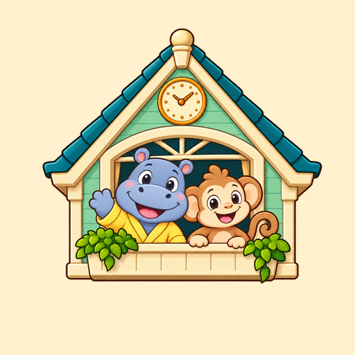

Little Day Tower
By Perpetuum Mobile
A cozy dollhouse game about everyday routines for children aged 3-5. Explore nine rooms with animal friends, from breakfast and creative play to bath time and a bedtime story.
All rooms included. Offline play, with no ads or in-app purchases.
Support
Parents and guardians can email contact@sergiumuresan.ro. Please do not include a child's personal information.
Read the privacy policy